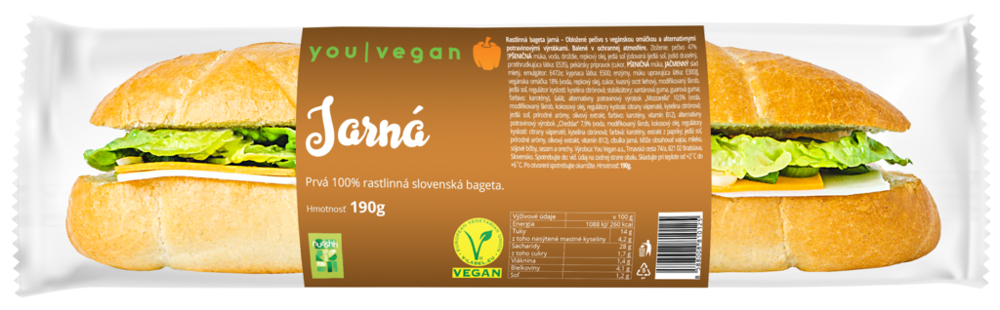

Študentská bageta
Ochutnajte našu jarnú bagetu
100 % rastlinná bageta s plátkami alternatív syrov značky Nurishh s príchuťou mozzarely a cheddaru v kombinácii s jarnou cibuľkou, kvalitnou vegánskou omáčkou, doplnená o čerstvú zeleninu.

Zloženie
- čerstvá bageta
- chrumkavá zelenina a jarná cibuľka
- plátky alternatív syrov s príchuťou mozzarely a cheddaru
- vegánska omáčka
Hmotnosť
190g
Energetická hodnota
1 O88 kJ / 260 kcal
| Výživové údaje v 100g | |
|---|---|
| Tuky | 14g |
| z toho mastné kyseliny | 4,2g |
| Sacharidy | 28g |
| z toho cukry | 1,7g |
| Vláknina | 1,4g |
| Bielkoviny | 4,1g |
| Soľ | 1,2g |
Zloženie a alergény
Pečivo 47% [PŠENIČNÁ múka, voda, droždie, repkový olej, jedlá soľ jódovaná (jedlá soľ, jodid draselný, protihrudkujúca látka: E535), pekársky prípravok (cukor, PŠENIČNÁ múka, JAČMENNÝ slad mletý, emulgátor: E472e; kypriaca látka: E500; enzýmy, múku upravujúca látka: E300)], vegánska omáčka 18% (voda, repkový olej, cukor, kvasný ocot liehový, modifikovaný škrob, jedlá soľ, regulátor kyslosti: kyselina citrónová; stabilizátory: xantánová guma, guarová guma; farbivo: karotény), šalát, alternatívny potravinový výrobok „Mozzarella“ 10,5% (voda, modifikovaný škrob, kokosový olej, regulátory kyslosti: citrany vápenaté, kyselina citrónová; jedlá soľ, prírodné arómy, olivový extrakt, farbivo: karotény, vitamín B12), alternatívny potravinový výrobok „Cheddar“ 7,9% (voda, modifikovaný škrob, kokosový olej, regulátory kyslosti: citrany vápenaté, kyselina citrónová; farbivá: karotény, extrakt z papriky; jedlá soľ, prírodné arómy, olivový extrakt, vitamín B12), cibuľka jarná. Môže obsahovať vajcia, mlieko, sójové bôby, sezam a orechy.

{kind=link}
{kind=link}
{kind=link}
Máte záujem o túto bagetu alebo sa chcete stať našim partnerom?
Kontaktujte nás a my sa vám ozveme